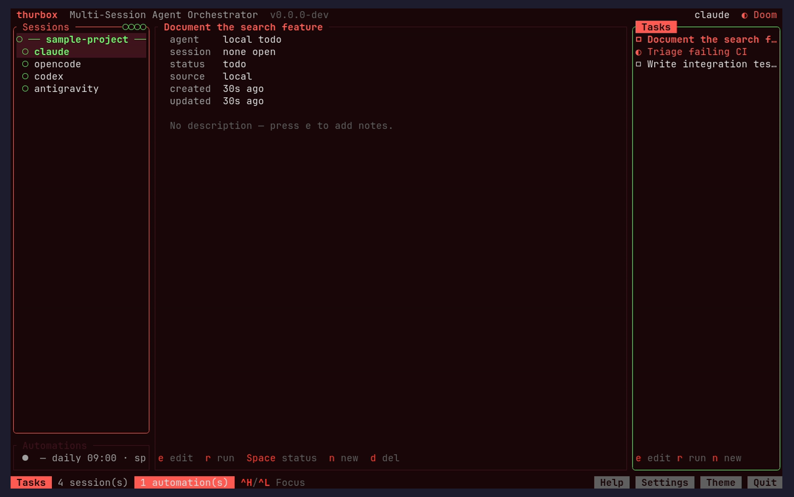
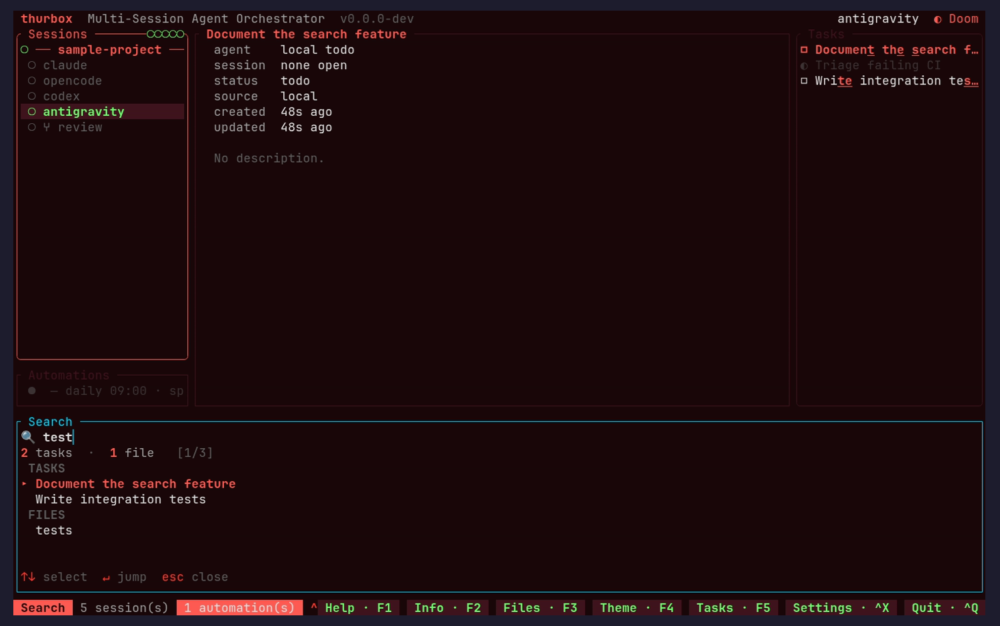
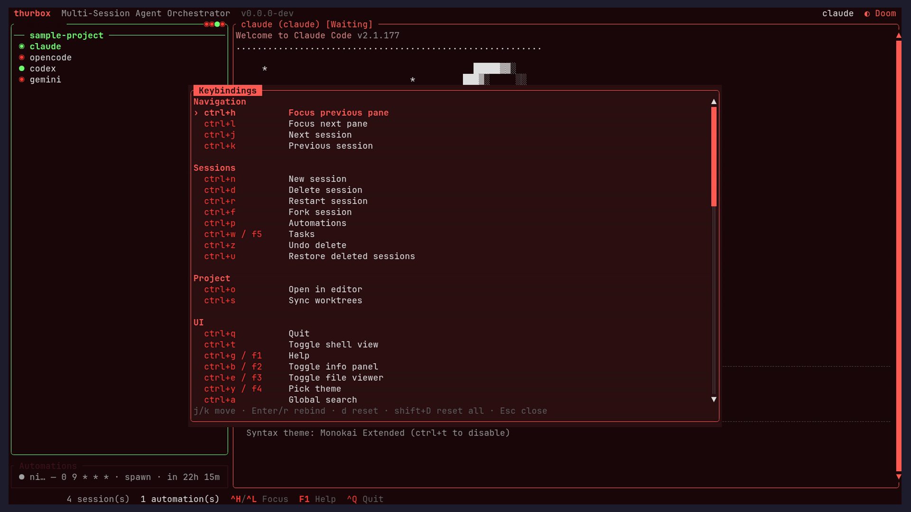
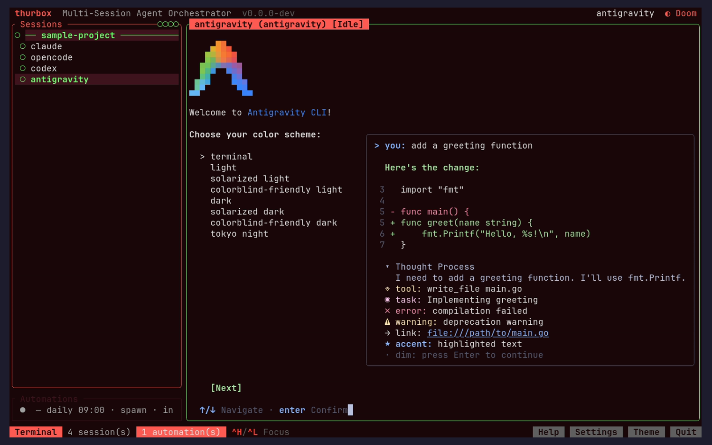
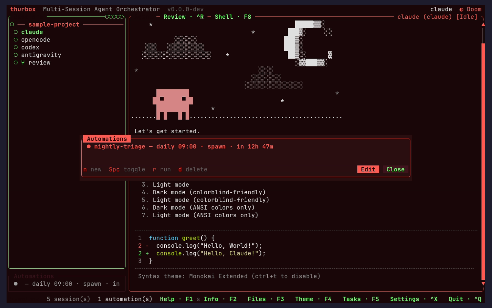
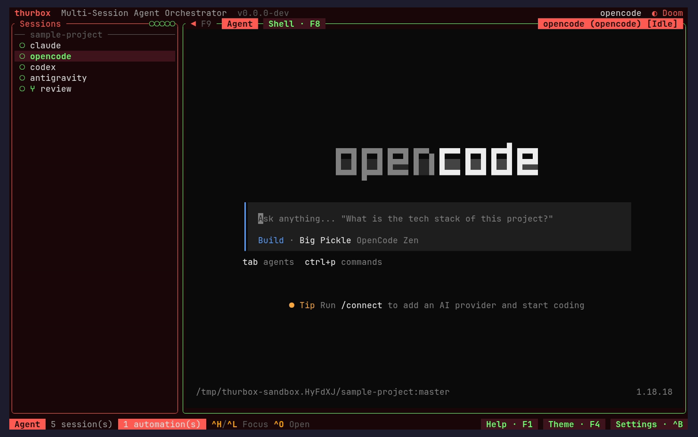
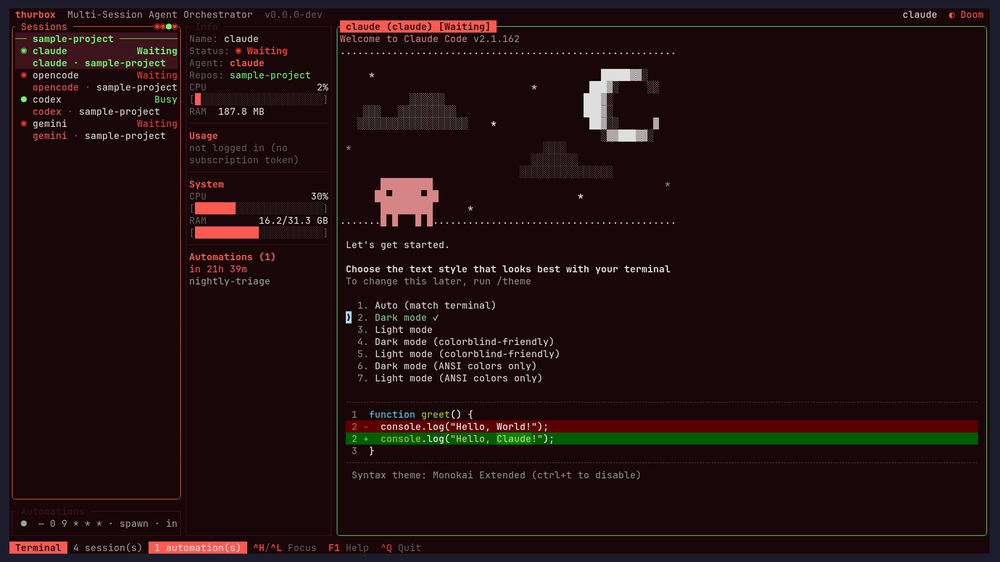
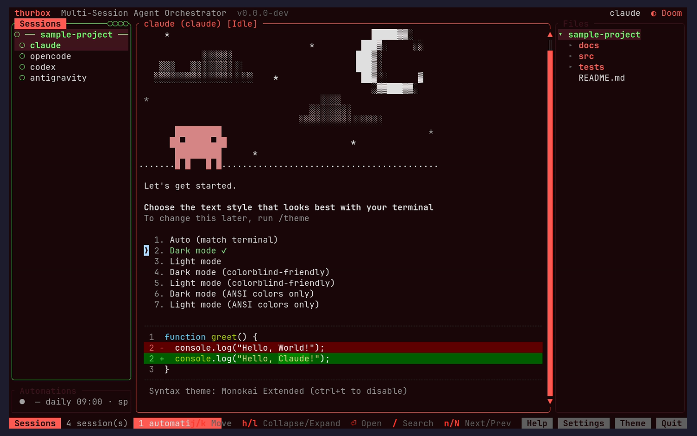
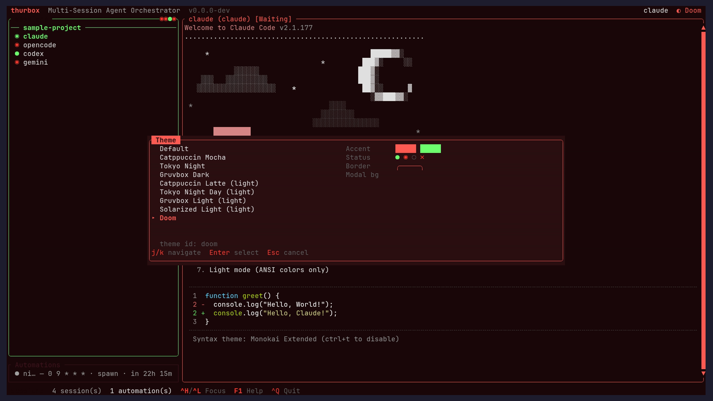
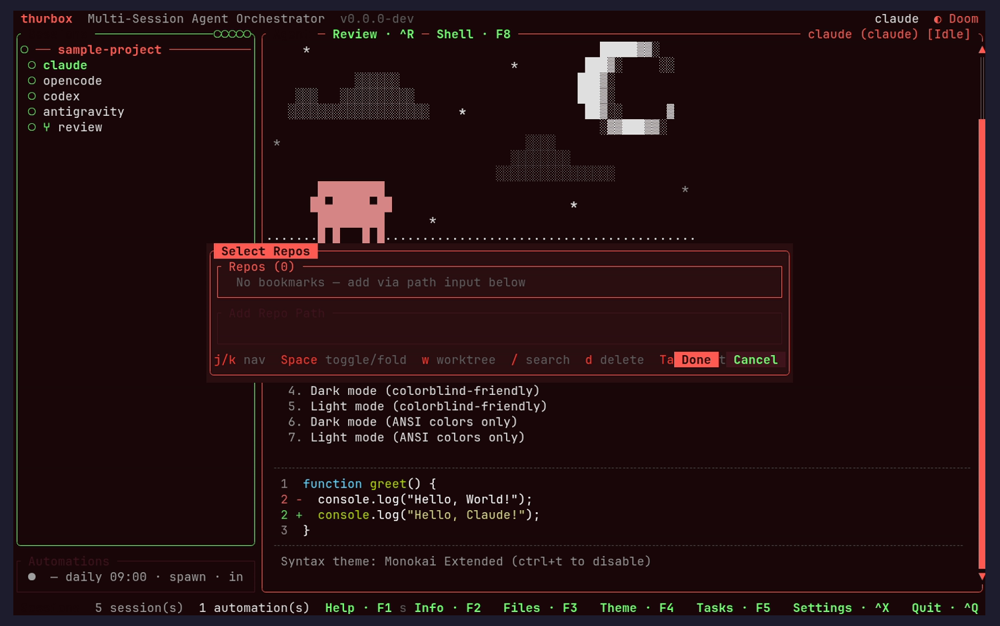

thurbox TUI — UI/UX Review (Tasks)
This page is generated by the
ui-review
skill: it drives the real TUI in an isolated sandbox, screenshots every screen, and
critiques each through four lenses — visual design, usability, consistency, and
accessibility. Re-run the skill to refresh it.
Summary — 13 findings across 10 screens
13 nits
5 visual
5 usability
2 consistency
1 accessibility
Top recommendations
- Theme-wide: the Doom palette signals almost everything in shades of red (status, borders, selection, titles, help) — add a secondary hue (or rely more on the existing glyphs/weight) so hierarchy and color-vision safety improve.
- Status is shown twice in the task preview (panel checkbox glyph + a 'status' metadata row) — consider dropping the row since the glyph already conveys it.
- Addressed since the prior review: description-less tasks now show a muted call-to-action; the task title is the panel border heading (no duplicate row); metadata labels use a brighter tone; and the 'r run' affordance now appears in both the preview footer and the right-hand Tasks panel footer.
Tasks panel + full-screen preview (Ctrl+W) Ctrl+W

nit
Status shown twice
visual
Status appears both as the panel checkbox glyph (☐/◐/☑) and as a 'status
todo' metadata row, duplicating the same fact side by side.
Fix:
Either drop the 'status' metadata row (the glyph already conveys it)
or color the glyph + row consistently so the repetition reads as intentional.
nit
Preview now resolves the earlier friction (fixed)
usability
The task title is the panel border heading (no duplicate row), description-less
tasks show a muted 'No description — press e to add notes' CTA instead
of blank space, metadata labels use a brighter legible tone, and the 'e
edit · r run · …' footer makes the trigger-time action discoverable.
Fix:
No change; the right-hand Tasks panel footer now mirrors 'r run · e edit ·
n new' for parity.
Global search — task title/description match + central preview Ctrl+A + query

nit
Task preview now fills the central pane (good)
usability
Previewing a task result shows its full details in the central pane while
non-matching tasks dim in the right column — the cross-pane preview is coherent.
Fix:
No change; optionally show a one-line 'matched in description' note
when only the description matched, since the snippet already implies it.
nit
Matched-char highlight is subtle
visual
In the result list the fuzzy-matched characters (accent+bold+underline) are hard
to distinguish from the surrounding red text on this theme.
Fix:
Increase the matched-char contrast (e.g. brighter accent or reverse video) so
the match is obvious at a glance.
Keybindings help + editor (F1 / Ctrl+G) Ctrl+G

nit
Task action keys live below the fold
usability
The newly documented task keys (n/e, r run, Space, d, PgUp/PgDn) sit in the
'Fixed (not rebindable)' section, which is off-screen until you
scroll.
Fix:
Fine as-is, but a scrollbar or '· more below ·' affordance would
signal there is content past the visible rows.
nit
Dense single-hue key list
visual
The action and key columns are both red on dark, making the overlay read as a
wall of red.
Fix:
Tint the key column differently from the description column to aid scanning.
Session list + terminal (launch) launch

nit
Session status conveyed mostly by red shades
accessibility
'Waiting'/'Busy' status labels and the activity dots rely on
color in the red family, which is hard to separate for red-deficient vision.
Fix:
Pair status color with a short text/shape token already in use, and widen the
hue gap between states.
Automations pane (Ctrl+P) Ctrl+P

nit
Automations footer mirrors tasks footer
consistency
The automations pane footer ('n new e edit Spc toggle r run d delete Esc
close') matches the new tasks footer pattern — good cross-pane consistency.
Fix:
No change; keep the two panes' footers in lockstep as actions evolve.
A different session selected (Ctrl+J) Ctrl+J

nit
Selection highlight consistent with the list
consistency
Switching the active session keeps the same red selected-row treatment as the
default view; navigation reads consistently.
Fix:
No change; selection styling is coherent across the session list.
Session info panel (Ctrl+B) Ctrl+B

nit
Dense metrics column
visual
The info panel packs status, usage bars, system and automations into a narrow
column; labels and values run close together.
Fix:
Add a blank line between logical groups (status / usage / system / automations)
to aid scanning.
File viewer (repo tree, Ctrl+E) Ctrl+E

nit
Footer advertises tree controls clearly
usability
The file viewer footer spells out j/k move, collapse/expand, open and search —
discoverable and consistent with the other panes' footers.
Fix:
No change; this is the affordance pattern the tasks preview footer now follows
too.
Theme picker (Ctrl+Y) Ctrl+Y

nit
Live swatch aids selection
visual
The picker pairs the preset list with a live accent/status/border swatch, so the
palette is previewable before committing — a good model the action picker could
borrow if it grows.
Fix:
No change.
New-session / repo picker (Ctrl+N) Ctrl+N

nit
Clear empty-bookmarks state
usability
With no bookmarks the picker explains 'add via path input below'
rather than showing a blank box — a good empty-state pattern.
Fix:
No change; this is the empty-state treatment the tasks preview should adopt for
description-less tasks (see recommendation).